Cómo leer este manual
El documento describe Bibliotheca como producto terminado. No todo lo descrito existe hoy en el mismo lugar.
Lo que hay en este repositorio es el prototipo interactivo de la interfaz, construido en React para poder recorrer y validar cada pantalla antes de escribir el cliente definitivo. El cliente de producción es una aplicación Android en Kotlin, y de ahí vienen las piezas que hablan de hilos, Jsoup o almacenamiento local.
Para que no haya ambigüedad, cada módulo lleva una de estas dos marcas:
Navegable hoy en el prototipo. Lo que describe el texto se puede ver y usar en pantalla.
Definido para el cliente de producción. La interfaz existe; la mecánica de fondo está descrita aquí como contrato de implementación.
Sistema de diseño
Una sola regla de proporción gobierna toda la interfaz: 60 – 30 – 10.
El reparto no es decorativo, es una restricción de composición. Cada color tiene un trabajo asignado y no invade el de los demás: el dominante sostiene, el estructural agrupa y el acento solo aparece donde hay una acción. Ese equilibrio es lo que evita que una pantalla con muchos datos se sienta ruidosa.
| Proporción | Papel | Dónde vive |
|---|---|---|
| 60 % | Dominante · el fondo | Lienzos de pantalla, fondos de modal, superficies base |
| 30 % | Estructura | Tarjetas, barra de navegación, campos, contenedores, separadores |
| 10 % | Acento · la acción | Botón primario, pestaña activa, FAB, badges, barra de progreso |
Las cuatro apariencias
Cambiar de apariencia no cambia solo el acento: cada una define su tríada completa más su familia de tinta y el fondo exterior del dispositivo. Si solo se sustituyera el 10 %, el fondo y la estructura seguirían en la familia anterior y el conjunto se vería roto. La apariencia activa es Neblina.
Los tres modos: claro, sepia y oscuro
Apariencia y modo son dos ejes distintos y se combinan sin pisarse. La apariencia elige la familia cromática —el matiz de la tríada—. El modo decide cómo se renderiza esa familia: qué tan luminoso es el 60 %, cuánto se separa el 30 % del fondo y cuánto hay que corregir el acento para que siga leyéndose. Cuatro apariencias por tres modos dan doce combinaciones con un solo juego de tokens.
Las bandas están dibujadas a escala: ocupan exactamente el 60, el 30 y el 10 % del ancho.
Tokens de la apariencia activa en los tres modos
Neblina es la apariencia de referencia y la que aparece en todas las capturas de este manual. El resto se deriva aplicando las mismas reglas a su propia familia.
| Token | Papel | Claro | Sepia | Oscuro |
|---|---|---|---|---|
| dominante | Fondo de pantalla | #eef2f7 | #f2e8d5 | #17212c |
| dominanteClaro | Interior de modales | #f8fafc | #f8f1e3 | #1e2a37 |
| dominanteProfundo | Huecos y campos internos | #e0e8f1 | #e6dac2 | #121a23 |
| estructura | Tarjetas, nav, inputs | #c4d4e2 | #dccdb0 | #253544 |
| estructuraOscura | Bordes y separadores | #a6bccf | #c6b291 | #374c60 |
| acento | Acción | #5a7fa0 | #4d769b | #8fb3d0 |
| acentoPálido | Chip activo, badge suave | #dbe7f2 | #e2e7ec | #24384a |
| tinta | Texto principal | #23313d | #33291c | #e6eff7 |
| tintaMedia | Texto secundario | #445a6c | #5a4b36 | #b6cadb |
| tintaSuave | Captions y placeholders | #7794a9 | #8a795f | #8aa4b8 |
| texto sobre acento | Etiqueta del botón primario | blanco | blanco | #17212c |
Cómo se deriva cada modo
- Claro es la definición base de cada apariencia: fondo muy claro teñido con su matiz, estructura a media distancia y acento saturado.
- Sepia sustituye el fondo y la estructura por una escala de papel cálido —común a las cuatro apariencias, porque el papel es el papel— y conserva el acento de la apariencia oscurecido un paso, ya que un tono claro pierde contraste sobre crema. La tinta se vuelve marrón tostado en lugar de gris.
- Oscuro toma como fondo el color del shell de la apariencia, levanta la estructura entre un 9 y un 18 % para separarla del fondo, y aclara el acento en lugar de oscurecerlo. Es la inversión que más se olvida: el acento del modo claro sobre fondo oscuro baja a 2,4:1 y desaparece.
El acento en cada combinación
| Apariencia | Claro | Sepia | Oscuro |
|---|---|---|---|
| Salvia | #4e7c5f | #4e7c5f | #89b39a |
| Neblina | #5a7fa0 | #4d769b | #8fb3d0 |
| Lavanda | #7a6a9a | #6f5f8f | #a698c4 |
| Ámbar | #8a6840 | #7d5c34 | #c9a071 |
Contraste medido
Ratios WCAG calculados sobre los valores de arriba. El umbral es 4,5:1 para texto normal y 3:1 para texto grande, elementos de interfaz y bordes.
| Par | Claro | Sepia | Oscuro |
|---|---|---|---|
| tinta sobre fondo | 11,84 | 11,72 | 13,99 |
| tintaMedia sobre fondo | 6,39 | 6,93 | 9,66 |
| tintaSuave sobre fondo | 2,83 | 3,47 | 6,26 |
| tinta sobre estructura | 8,78 | 9,09 | 10,80 |
| acento sobre fondo | 3,75 | 3,94 | 7,38 |
| texto del botón primario | 4,22 | 4,79 | 7,38 |
Dos ajustes pendientes en el modo claro.
Sepia y oscuro pasan el umbral en todos los pares. El modo claro arrastra dos valores por debajo, heredados de la paleta original:
El texto blanco sobre el botón primario queda en 4,22 y necesita 4,5;
oscurecer el acento a #55799b lo sube a 4,57 con un cambio de tono casi
imperceptible. Y las captions en tintaSuave quedan en 2,83;
#657f96 las lleva a 3,71. Ambos cambios afectan a todas las capturas de
este manual, así que la decisión es de diseño, no de implementación.
Lo que no cambia con el modo
- Los colores semánticos. Error y aviso mantienen su significado en los tres modos; solo se aclaran en oscuro para conservar contraste.
- El color de lomo de cada libro. Es contenido, no interfaz: identifica al ejemplar en la rejilla, en la vista del librero y en el resaltado de sus frases. Cambiarlo con el tema rompería ese reconocimiento.
- La proporción. Los tres modos reparten 60-30-10 exactamente igual. Lo que cambia es la luminosidad de cada franja, nunca cuánto ocupa.
Tipografía
| Familia | Uso |
|---|---|
| Playfair Display | Títulos de pantalla, títulos de libro, cifras destacadas |
| Lora | Texto literario: sinopsis, reseñas, frases, notas en cursiva |
| DM Sans | Interfaz: etiquetas, botones, campos, metadatos |
| DM Mono | Datos técnicos: ISBN, códigos |
Movimiento
Cuatro animaciones cubren todas las transiciones, definidas en src/index.css:
fadeIn para listas que entran escalonadas, slideUp para el modal
de añadir, slideRight para pantallas que se apilan y scaleIn para
elementos que aparecen dentro de una vista ya visible. Las listas escalonan con
retardos de 35–50 ms por elemento.
Arquitectura
El prototipo es una aplicación de una sola pantalla: no hay enrutador. La navegación es estado local, y las pantallas superpuestas se apilan como capas absolutas dentro del marco del dispositivo, con un orden de apilamiento explícito.
| Archivo | Responsabilidad |
|---|---|
src/App.tsx | Marco del dispositivo, escalado, barra de estado, navegación inferior y montaje de overlays |
src/theme.ts | Las cuatro apariencias y el objeto C de tokens que consume toda la interfaz |
src/data.ts | Tipos del dominio, catálogos de opciones y datos de ejemplo |
src/screens/ | Colección, Libreros, Préstamos, Ajustes, My year in books |
src/components/ | Añadir libro, búsqueda por título, detalle del libro, seguimiento de lectura |
src/index.css | Fuentes, animaciones y reinicio global |
Capas de apilamiento
| z-index | Capa |
|---|---|
| 20 | Barra de navegación inferior y su botón flotante |
| 50 | Detalle del libro |
| 60 | Añadir libro · Ajustes |
| 70 | Subsecciones de Ajustes |
La barra inferior necesita position: relative y z-index: 20 por una razón
concreta: el contenido de las pantallas usa animaciones con transform, que crean
contexto de apilamiento y taparían la mitad del botón flotante que sobresale por encima
de la barra.
Marco de aplicación
Cuerpo de simulador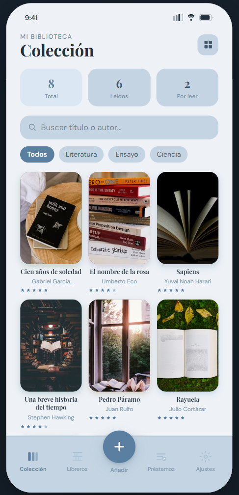
El proyecto esta dentro de un contenedor todo lo demás. Dibuja el dispositivo de 390 × 844 con
esquinas de 44 px, la barra de estado simulada y la navegación inferior, y aloja
las pantallas superpuestas. (esto es unicamente para poder trazar elproyecto)
Contenido
- Escalado automático: el marco se reduce con
transform: scale()hasta caber entero en la ventana, con 16 px de aire arriba y abajo. Nunca se agranda por encima del tamaño real. Recalcula al redimensionar y al girar el dispositivo. - Barra de estado: hora, cobertura, wifi y batería en SVG.
- Navegación inferior: cinco posiciones — Colección, Libreros, el botón flotante Añadir, Préstamos y Ajustes. La pestaña activa se marca con color de acento y peso 600.
- Botón flotante: sobresale 22 px por encima de la barra, con halo del color de acento y respuesta táctil de escala al pulsar.
Colección
Implementado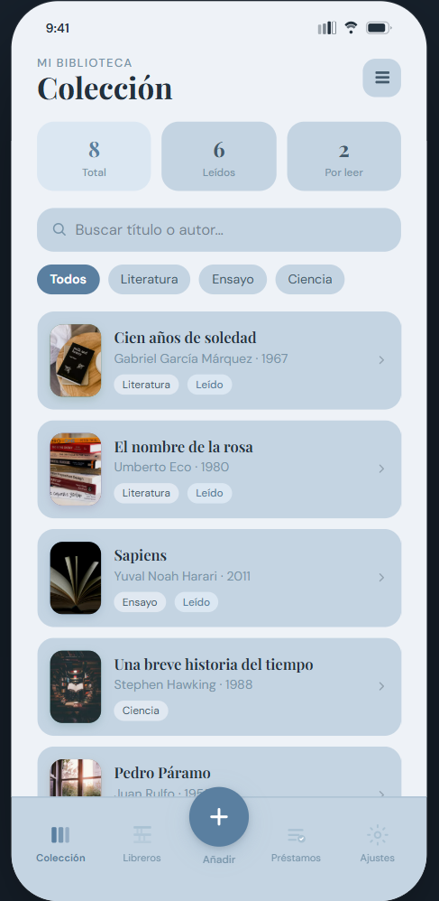
Pantalla de inicio y punto de entrada a todo el catálogo. Responde a la pregunta «qué tengo» antes que a cualquier otra.
Contenido
- Tres contadores: Total, Leídos y Por leer. El total va en acento suave porque es la cifra de referencia.
- Buscador: filtra por título o autor conforme se escribe, sin distinguir mayúsculas.
- Píldoras de categoría: «Todos» más un filtro por género, en fila desplazable horizontalmente.
- Conmutador rejilla / lista: la rejilla de tres columnas prioriza las portadas y muestra título, autor y calificación; la lista añade el año y los chips de género y estado de lectura.
- Entrada al detalle: cualquier libro abre su ficha completa.
Las portadas se apoyan en el color de lomo de cada libro: se usa como fondo mientras carga la imagen y como color de su sombra, de modo que cada tarjeta proyecta su propio tono.
Libreros
Implementado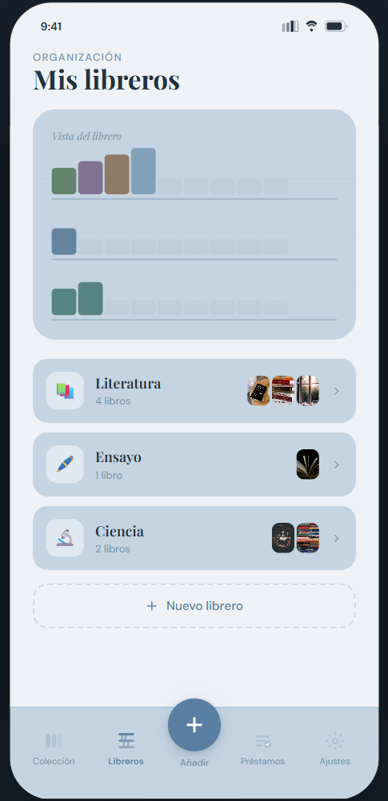
La organización física de la colección. Un «librero» agrupa libros igual que un estante real, y esa misma asignación es la que aparece en la ficha de cada ejemplar.
Contenido
- Vista del librero: ilustración generada con los libros reales — cada lomo es un libro, con su color y una altura variable, sobre baldas dibujadas con un degradado repetido.
- Tarjeta por librero: icono, nombre, número de libros y tres miniaturas de portada. Al pulsarla se despliega una rejilla de cuatro columnas con todo su contenido.
- Estado vacío: un estante sin libros lo dice explícitamente en vez de quedar en blanco.
- Nuevo librero: acción de creación al final de la lista.
Préstamos
Implementado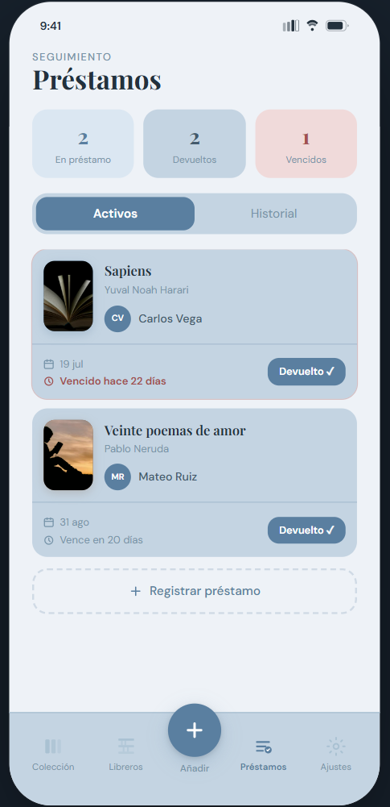
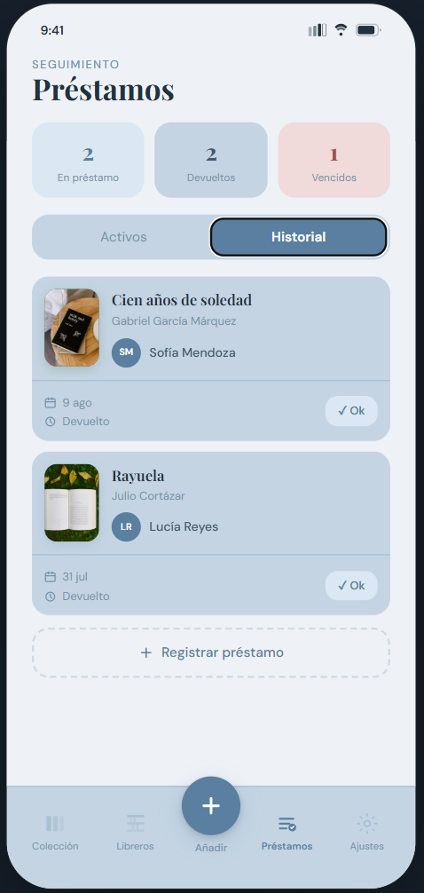
Control de los libros que salieron de casa. Resuelve la pregunta incómoda de «a quién le presté esto y desde cuándo».
Contenido
- Tres contadores: En préstamo, Devueltos y Vencidos. El de vencidos cambia a color de alerta solo cuando hay alguno, de modo que el color señala algo real.
- Pestañas Activos / Historial.
- Ficha de préstamo: portada, título, autor, prestatario con avatar de iniciales, fecha de salida y estado de vencimiento redactado en lenguaje natural — «Vence en 12 días», «Vence hoy», «Vencido hace 3 días».
- Marcar devuelto: mueve el préstamo al historial en el momento.
- Señal de vencimiento: contorno rojo en la tarjeta, además del texto.
Añadir libro
Implementado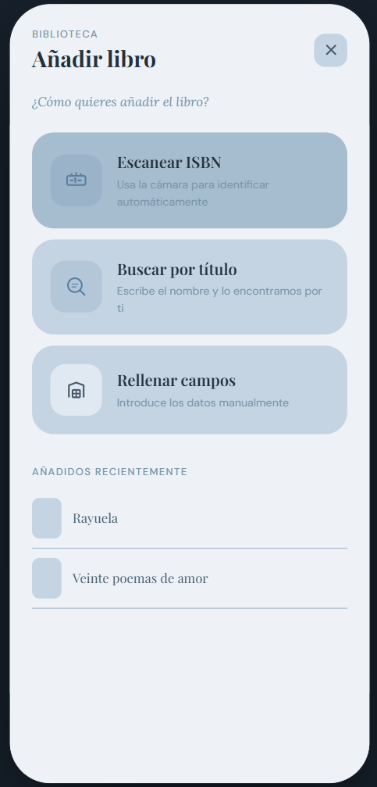
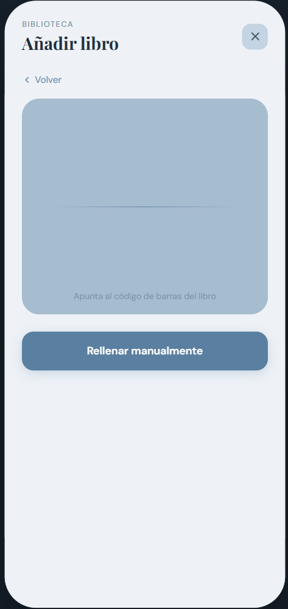
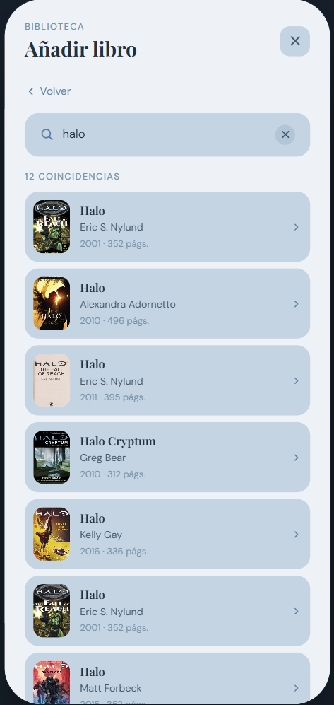
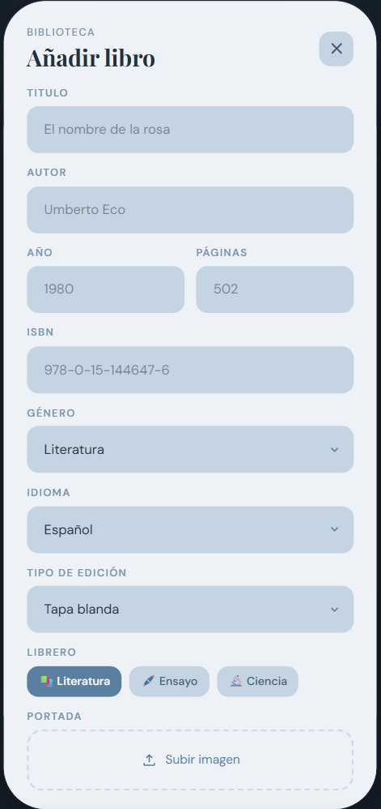
Tres caminos para dar de alta un ejemplar, ordenados del que menos esfuerzo pide al que más. Todos desembocan en el mismo formulario de revisión antes de guardar.
1 · Escanear ISBN
Visor de cámara con marco de enfoque y línea de barrido. Al leer el código de barras resuelve la ficha con el motor de metadatos y salta al formulario ya relleno.
2 · Buscar por título
Se escribe el nombre y la aplicación busca en el catálogo. Detalles de comportamiento:
- Se dispara sola al escribir, con espera de 400 ms tras la última tecla y un mínimo de tres caracteres.
- Cada consulta nueva aborta la anterior, de modo que una respuesta lenta no sobreescribe a una más reciente.
- Resultados con miniatura, autor, año y número de páginas; si el registro no tiene portada, se dibuja un icono de libro en su lugar.
- Cuatro estados cubiertos: indicación inicial, esqueletos de carga, sin resultados y error de red con reintento. Los tres últimos ofrecen siempre la salida a rellenar a mano.
3 · Rellenar campos
Formulario de nueve campos, en este orden:
| Campo | Control |
|---|---|
| Título | Texto |
| Autor | Texto |
| Año | Numérico |
| Páginas | Numérico |
| ISBN | Texto |
| Género | Lista desplegable · 38 opciones |
| Idioma | Lista desplegable · 13 opciones |
| Tipo de edición | Lista desplegable · 8 opciones |
| Librero | Chips de selección única |
Librero se queda en chips a propósito: son pocos, llevan emoji y verlos todos ayuda más que esconderlos. La portada aparece precargada cuando viene del catálogo, con opción de quitarla.
Cuando los datos llegan del catálogo, el formulario muestra un aviso pidiendo revisarlos. No es cortesía: los registros públicos mezclan con frecuencia el año de una reedición o el recuento de páginas de otra edición distinta a la que tienes en la mano.
Detalle del libro · Información
Implementado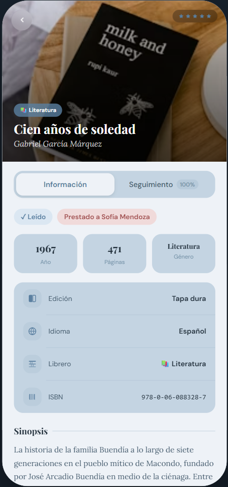
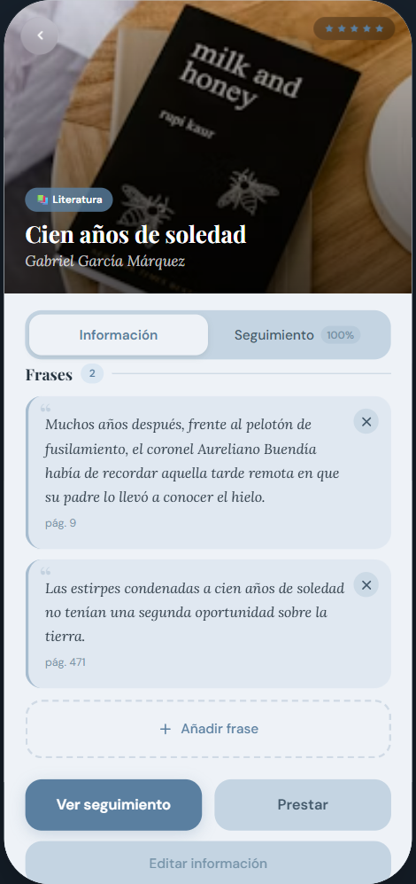
La ficha completa de un ejemplar. Se abre desde Colección o desde cualquier librero y se organiza en dos vistas conmutables por un selector situado justo debajo de la portada.
Contenido
- Portada a sangre de 280 px con degradado, botón de volver, calificación en estrellas y, superpuestos abajo, el librero al que pertenece, el título y el autor.
- Selector de vista: Información y Seguimiento; la segunda pestaña lleva el porcentaje leído, de modo que el avance se ve sin entrar.
- Estado de lectura: «Leído», «Leyendo · N %» o «Por leer», más un chip rojo si el ejemplar está prestado, con el nombre de quien lo tiene.
- Cifras: año, páginas y género.
- Ficha del ejemplar: edición, idioma, librero e ISBN. El icono de edición cambia según el formato — tapa dura rellena, tablet para eBook, audífonos para audiolibro, disco para CD y DVD, lomo estrecho para bolsillo.
- Sinopsis plegada a cuatro líneas con «Leer más».
- Mi reseña: texto propio, editable en la misma pantalla, con estado vacío que invita a escribirla.
- Frases: citas guardadas con su número de página, comilla decorativa y borrado individual. Se añaden desde un compositor en línea.
Detalle del libro · Seguimiento
Implementado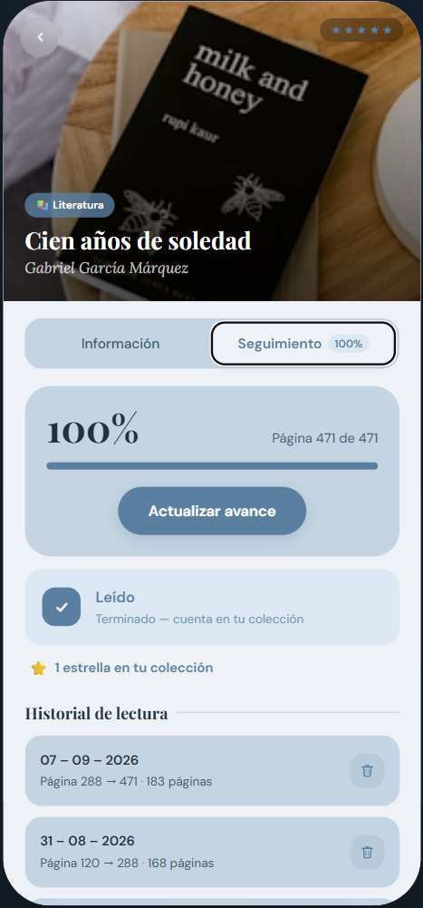
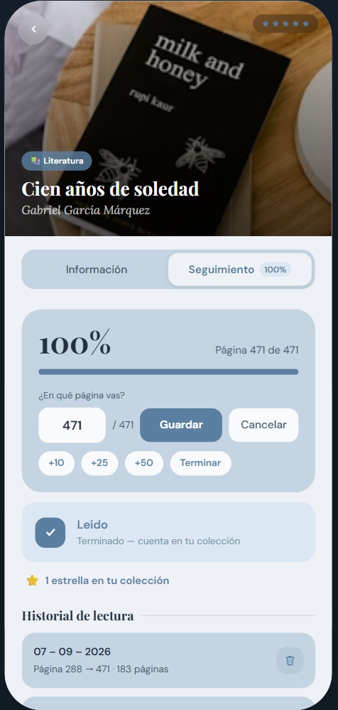
El diario de lectura de ese ejemplar: en qué página vas, cuánto llevas y cuándo leíste.
Contenido
- Avance: porcentaje en grande, «Página X de Y» y barra de progreso.
- Actualizar avance: abre un campo con la página actual precargada, más saltos rápidos +10, +25, +50 y «Terminar». Se confirma con Enter.
- Casilla Leído: al marcarla el libro salta al 100 % y registra el tramo pendiente como una entrada más del historial.
- Estrellas en tu colección: una por libro terminado.
- Historial de lectura: lo más reciente arriba, con fecha, tramo «Página 288 → 471» y total de páginas de esa sesión. Cada entrada se puede borrar.
Reglas de consistencia
- Guardar un avance crea una entrada con la fecha de hoy y marca el libro como leído si alcanza el total.
- Retroceder por debajo del total vuelve a desmarcarlo.
- Borrar una entrada recalcula la página actual al último avance que sobreviva —o a cero si no queda ninguno— y reajusta el estado de leído.
My year in books
Implementado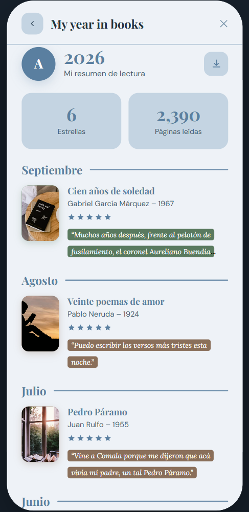
El resumen anual de lectura, accesible como primera opción destacada de Ajustes. Es la recompensa del seguimiento: convierte los registros diarios en un balance.
Contenido
- Cabecera: avatar, el año en grande y acción de descarga del resumen.
- Dos métricas: Estrellas —libros completados— y Páginas leídas.
- Desglose por mes, de diciembre hacia enero, mostrando solo los meses con libros terminados.
- Cada libro con portada, título, autor, año, calificación y una de sus frases guardadas, resaltada como con marcatextos usando el color de su lomo.
Cómo se calculan las cifras
Nada de esto se guarda aparte: todo se deriva del historial de lectura.
- Un libro cuenta como terminado en la fecha del avance que alcanzó su última página, y ese mes es donde aparece.
- Las estrellas son el número de libros completados dentro del año en curso.
- Las páginas leídas suman los tramos de todos los registros del año, así que incluyen lo avanzado en libros que aún no terminas.
Ajustes
Implementado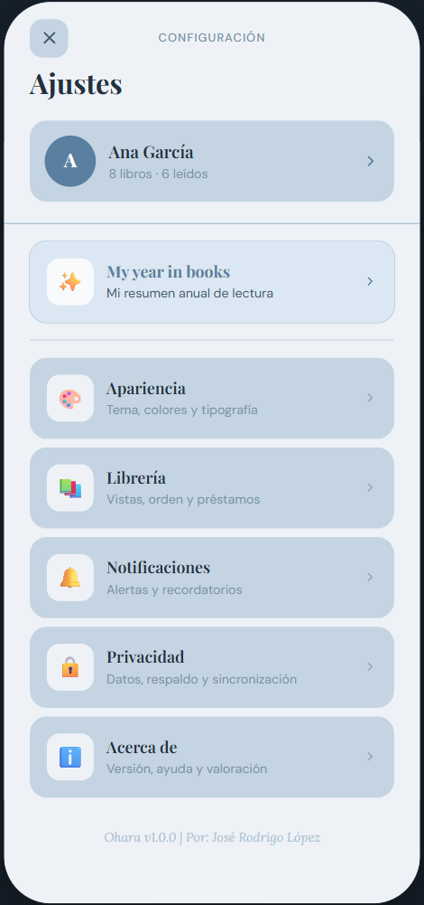
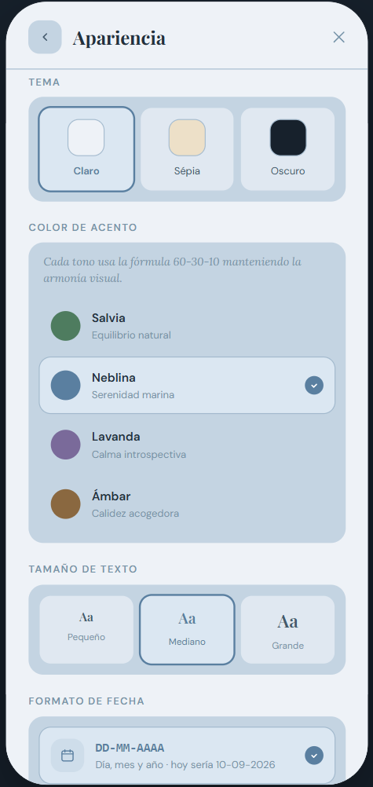
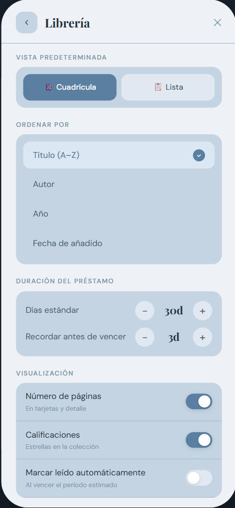
Cabecera con el perfil —nombre y recuento real de libros y leídos— y, debajo, el resumen anual destacado seguido de cinco secciones.
| Sección | Contiene |
|---|---|
| Apariencia | Tema claro / sepia / oscuro, color de acento, tamaño de texto, formato de fecha (DD-MM-AAAA o AAAA-MM-DD), idioma (Español o Inglés), tarjetas compactas y animaciones |
| Librería | Vista predeterminada, criterio de orden, duración del préstamo y días de aviso, y qué mostrar en las tarjetas |
| Notificaciones | Interruptor general y, si está activo, recordatorios de préstamo, alertas de vencimiento, resumen semanal y novedades |
| Privacidad | Respaldo automático, sincronización, análisis anónimo y gestión de datos: exportar, importar y borrar |
| Acerca de | Versión, valoración, ayuda y textos legales |
Motor de metadatos
EspecificadoNadie quiere teclear nueve campos por libro. El motor intenta rellenarlos solo, y recurre a fuentes progresivamente menos formales hasta conseguirlo.
La entrada puede ser un ISBN —escaneado o tecleado— o un título. La cadena se recorre en orden y se detiene en la primera fuente que devuelve una ficha utilizable; el resto no llega a consultarse. Toda la cadena se ejecuta fuera del hilo principal.
-
1
Google Books
Fuente primaria. Es la que mejor cubre ediciones en español y la que devuelve sinopsis y portada en mayor resolución. Requiere clave de API.
-
2
Open Library
Respaldo abierto, sin clave ni cuota. Cubre bien el fondo antiguo y las obras que Google no tiene indexadas, aunque con fichas más pobres. Es también la fuente que usa hoy la búsqueda por título del prototipo.
-
3
Scraper de librerías
Si ninguna API reconoce el ISBN, se consultan los buscadores web de Amazon y Gandhi analizando su HTML con Jsoup. Cubre el hueco típico: ediciones locales y reimpresiones recientes que los catálogos globales tardan meses en registrar.
-
4
Alta manual
Si todo falla, el formulario se abre con lo poco que se haya podido recuperar y el resto en blanco. Nunca se bloquea el alta de un libro por no encontrarlo.
Clave de API y cuota
La clave de Google Books se guarda en local.properties, se inyecta en tiempo de
compilación vía BuildConfig y queda fuera del control de versiones. Está restringida
por nombre de paquete y huella SHA-1, de modo que extraerla del APK no permite usarla en
otra aplicación. Open Library no requiere credencial.
| Fuente | Credencial | Límite | Devuelve |
|---|---|---|---|
| Google Books | Clave de API restringida | 1 000 consultas/día | Título, autor, año, páginas, ISBN, editorial, idioma, sinopsis, portada |
| Open Library | Ninguna | Uso razonable | Título, autor, año, páginas medianas, ISBN, idiomas, portada |
| Amazon · Gandhi | Ninguna | Autoimpuesto: 1 consulta/s | Título, autor, portada, editorial, precio de referencia |
Caché
Cada ficha resuelta se guarda en la base local indexada por ISBN, con validez de 30 días. Escanear dos veces el mismo libro no genera tráfico, y las consultas repetidas durante una misma sesión se sirven de memoria.
Scraper de respaldo
EspecificadoImplementado con Jsoup, una biblioteca de Java/Kotlin muy ligera para parsear HTML. No hay navegador headless ni motor de JavaScript: se descarga el documento del buscador de la tienda y se extraen los nodos con selectores CSS. Es la razón de que el respaldo quepa en la aplicación sin engordarla.
Ejecución en hilo secundario
La consulta se lanza siempre desde un hilo de entrada/salida, nunca desde el principal.
En Android una petición de red en el hilo de interfaz provoca
NetworkOnMainThreadException, y aun sin eso el análisis del HTML bloquearía el
dibujado. Las dos tiendas se consultan en paralelo y gana la primera que responda con
una ficha válida.
suspend fun buscarPorIsbn(isbn: String): FichaLibro? = withContext(Dispatchers.IO) {
withTimeoutOrNull(8_000) {
listOf(
async { AmazonScraper.buscar(isbn) },
async { GandhiScraper.buscar(isbn) },
).awaitFirstOrNull { it != null }
}
}
// Cada scraper descarga y parsea con Jsoup
val doc = Jsoup.connect(url)
.userAgent(USER_AGENT)
.timeout(8_000)
.get()Objetivos de extracción
| Tienda | Consulta | Nodos que se leen |
|---|---|---|
| Amazon | /s?k={ISBN} |
Primer resultado de la lista: título, autor, imagen de portada y editorial de la ficha |
| Gandhi | /catalogsearch/result/?q={ISBN} |
Primera tarjeta de producto: nombre, autor, imagen y precio de referencia |
Reglas de uso
- Solo por ISBN. Un ISBN identifica una edición concreta, así que el primer resultado es fiable. Por título los buscadores devuelven ruido —otras ediciones, accesorios, resúmenes— y esa vía no se usa.
- Solo como último recurso, después de que ambas APIs hayan fallado.
- Una consulta por segundo como máximo, y ninguna en segundo plano: siempre responde a una acción explícita del usuario.
- Datos marcados como no verificados. Al llegar de un scraper, el formulario avisa con más énfasis de que conviene revisar la ficha.
Fragilidad asumida.
Un scraper depende del marcado de un sitio que puede cambiar sin avisar. Por eso vive en el último escalón, sus selectores están aislados en una clase por tienda para poder corregirlos sin tocar el resto, y cualquier fallo de análisis se trata como «no encontrado» y pasa el turno al alta manual, jamás como un error visible para quien usa la aplicación.
Modelo de datos
ImplementadoLibro
| Campo | Tipo | Descripción |
|---|---|---|
| id | string | Identificador del ejemplar |
| title · author | string | Título y autor principal |
| year · pages | number | Año de publicación y extensión |
| genre | string | Género, de los ocho del catálogo |
| isbn | string | Identificador de la edición |
| edition | Edition | Tapa blanda, tapa dura, bolsillo, eBook, audiolibro, CD o DVD |
| language | string | Idioma del ejemplar |
| shelfId | string | Librero donde está guardado |
| cover · color | string | Imagen de portada y color de lomo, usado en sombras e ilustraciones |
| rating | number | Calificación de 1 a 5 |
| read | boolean | Terminado o no |
| synopsis | string | Resumen de la obra |
| review | string? | Reseña personal, opcional |
| quotes | Quote[] | Frases guardadas con su página |
| currentPage | number | Página por la que va la lectura |
| readingLog | ReadingEntry[] | Sesiones registradas |
Entidades auxiliares
| Tipo | Campos |
|---|---|
| Shelf | id · name · icon · color |
| Loan | id · bookId · borrower · lentDate · dueDate · returned · avatar |
| Quote | id · text · page? |
| ReadingEntry | id · date · fromPage · toPage |
Catálogos de opciones
EDITIONS, LANGUAGES y GENRES son la única fuente de verdad de los
desplegables del formulario de alta y de los filtros. Añadir un género se hace en un solo
sitio y aparece en toda la aplicación.
Estado y persistencia
En el prototipo, src/data.ts es un módulo estático y cada pantalla mantiene su
propio estado en React. Eso basta para recorrer y validar los flujos, pero implica que
lo que se escribe en una sesión no sobrevive al cierre de la pantalla.
Acciones que hoy no persisten
- Guardar un libro nuevo desde cualquiera de los tres métodos de alta.
- Reseña personal y frases de un libro.
- Avances de lectura y entradas del historial.
- Preferencias de la pantalla de ajustes.
- Marcar un préstamo como devuelto sí persiste, pero solo mientras la pantalla siga montada.
Siguiente paso
Subir la colección a estado compartido en App.tsx con una función de actualización que
se pase a las pantallas. Con ese único cambio, los cinco flujos anteriores empiezan a
persistir dentro de la sesión, y queda preparado el punto exacto donde el cliente de
producción enchufará el almacenamiento local y la sincronización.